5 job(s) · 6 item(s) · Baker Production QC
DSC06666Put the real cream wall colour back in the bathrooms
In the three bathrooms (DSC06632, DSC06666, DSC06672) the cream-painted upper walls have been turned grey-white and the red/green feature tile strip is muted, although the white tiles in the same raw frames are neutral, so the cream is the real paint, not a cast (gate keeps only 13-29% of the raw colour). Fix: Match wall paint and feature-tile colour to the raw/flash frame; keep tiles white, don't desaturate.
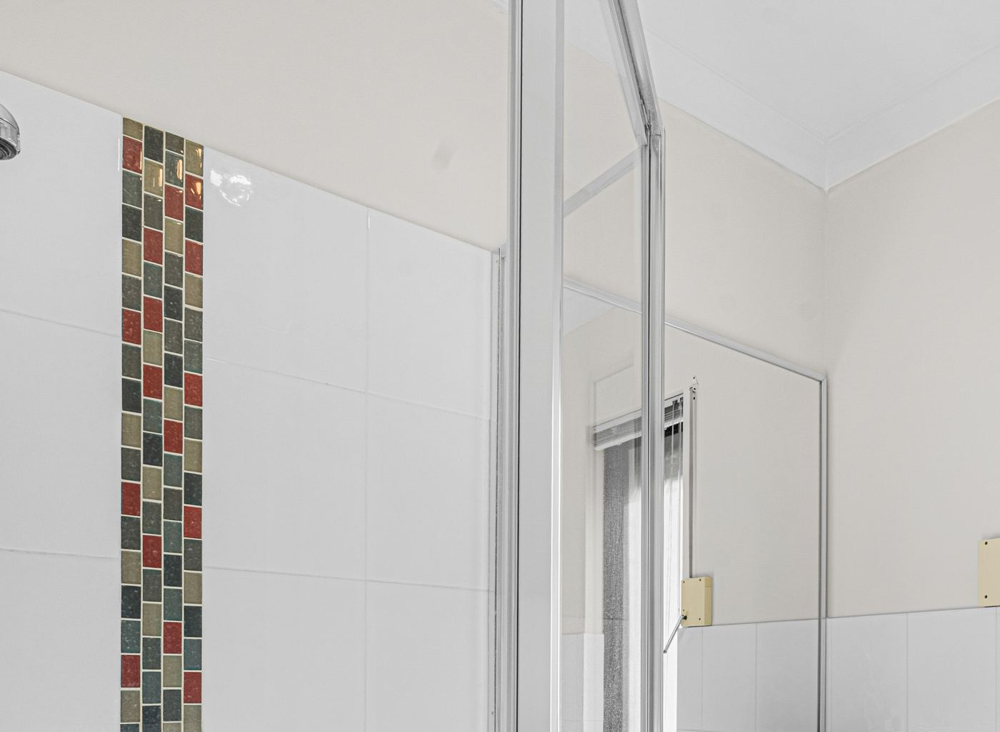
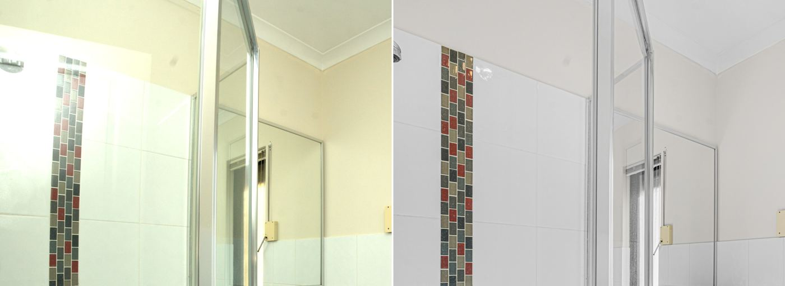
Done well: Exteriors natural: soft pale-blue sky, brick and pavers not pushed, greens natural; Timber floors keep their real warmth in living/dining; Window views pulled cleanly in bedrooms and living; Verticals straight throughout
DSC06871Tone down the golden, over-saturated backyard grade
The backyard exteriors (DSC06871, DSC06866, and DSC06876 by eye, same grade) have a golden-orange cast and pushed yellow-green foliage and lawn well beyond the raw: greens x1.7-1.9, warm x1.3-1.5, saturation 41-50 against Crib's maximum of 35. The trees glow orange and the lawn looks artificial. Fix: Match the raw: pull back warmth and saturation on trees, lawn and brick; keep the soft blue sky.
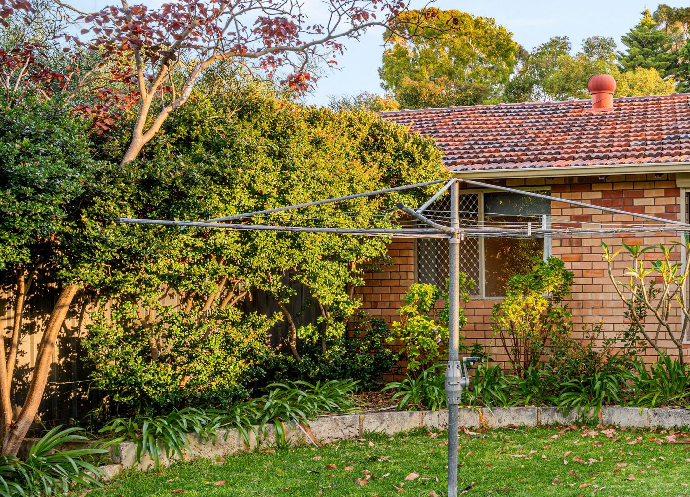
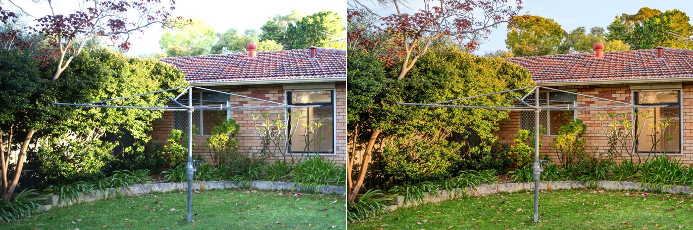
Done well: Interiors clean and consistent: tungsten cast removed, timber-look floors, brick and terrazzo kept their real colour; Window views recovered in kitchen, laundry and bathroom without halos; Front exteriors natural with pale soft skies; bin removed cleanly from the front (DSC06886)
DSC00268Ease the crunchy grey bedding, put blue accents back
The master bedroom has gone cool grey and near black-and-white (keeps 31% of the raw's colour): navy duvet stitching turned black, blue pillow piping and hallway book spines greyed, duvet texture crunchy. Fix: Match the raw: clean neutral whites, put the blue accents back, ease clarity on the bedding and pull exposure slightly (L 192).
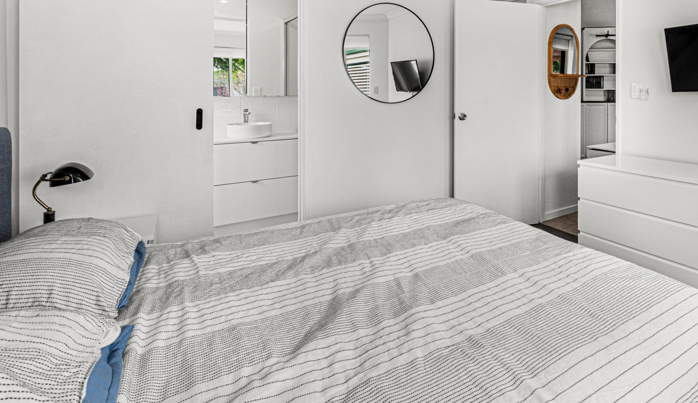
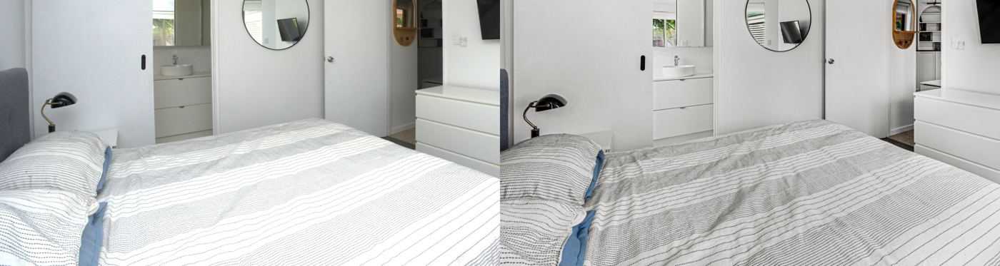
Done well: True-to-life colour across almost the whole set: white cabinetry, black granite, beige tiles and timber dining set all match the raws; Window views pulled cleanly with real outside detail (kitchen, living, bedrooms); Exteriors natural: brick, pavers and lawn not pushed, and the skies were replaced with a believable pale soft blue; Verticals straight throughout
DSC00551Put the warm beige kitchen floor back, ease clarity
The beige marble-look kitchen tiles have gone cold grey-pink with crunchy, exaggerated grain, and the grey cabinets are colder (keeps 45% of the raw's colour). DSC00557, the same kitchen from the other end, has the same treatment (keeps 47%). Fix: Match the floor colour from the raw (warm beige), reduce clarity/texture on the floor; same on DSC00557.
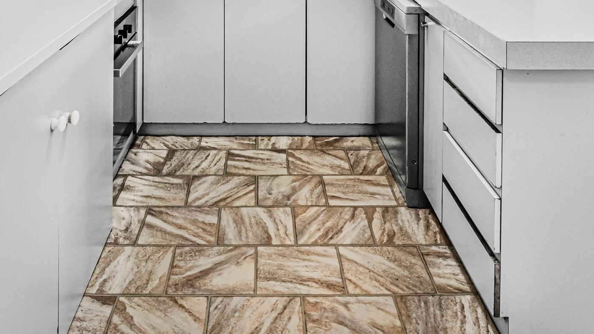
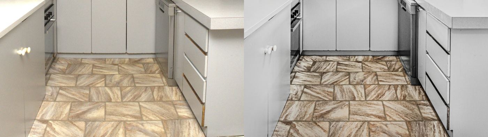
DSC00521Restore the living room's warm beige floor tiles
The same beige floor tiles in the living room have been pushed to cool grey with lifted, crunchy grain (keeps 49% of the raw's colour). The blue sofa and rug are fine. Fix: Match the real tile colour from the raw, reduce clarity on the floor.
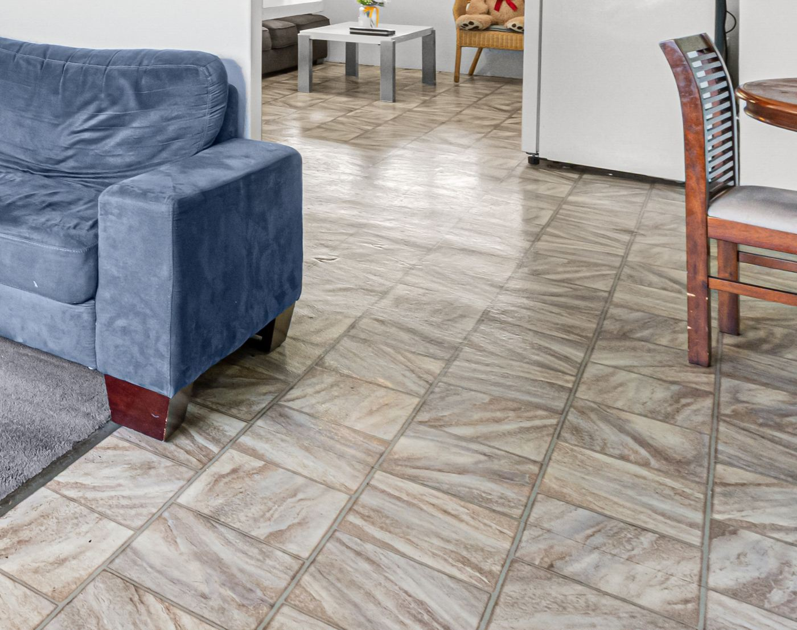
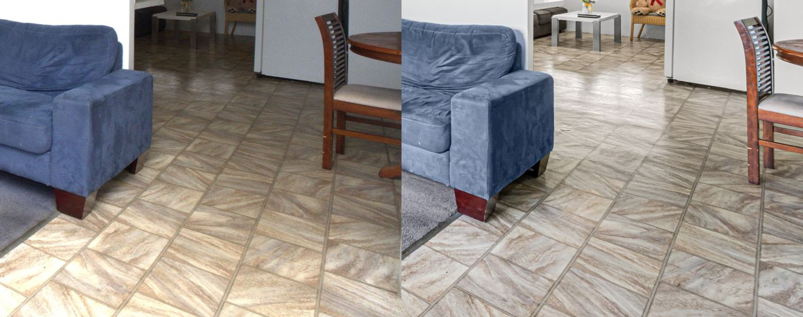
Done well: Wall colours true: dark teal master, beige study and pink laundry all match the raws; Exteriors natural with no glowing brick or pavers; skies replaced with a believable pale blue; Window views pulled cleanly; Verticals straight
DSC09853Put the bedroom carpet back to its real dark charcoal
In all four carpeted bedrooms (DSC09847, DSC09853, DSC09859, DSC09870) the dark charcoal carpet has been lifted to a pale, flat, crunchy mid-grey (raw carpet ~35-45/255 at wall-matched exposure vs ~100-116 in the final), so the rooms look washed out and hazy. Fix: Match the carpet tone to the flash/0EV raw: pull floor exposure, shadows and clarity down, keep real blacks.
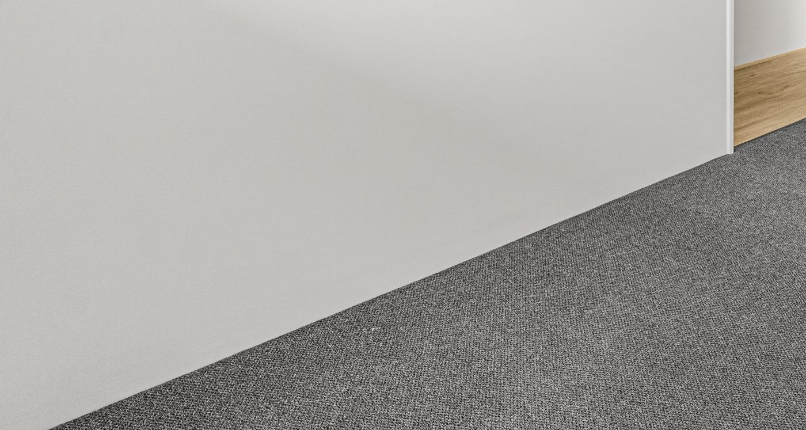
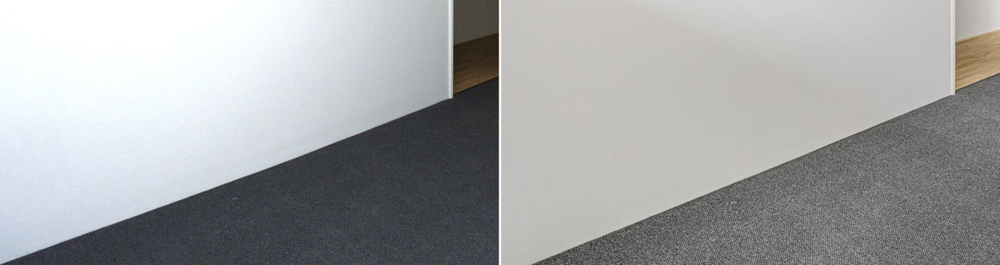
Done well: Timber floors keep their real warm colour in kitchen/living; Exteriors natural: pale soft-blue sky, real green turf, brick and pavers not pushed; Windows pulled with views, photographer removed from mirror; Verticals straight throughout